<div class="rsvp_fullwidth">
    <!--  twitter api head start here  -->
    <div class="rsvp_twitter_feed_head">
        
        <div class="rsvp_twitter_nana_txt">
            <h1 class="rsvp_twitter_nana_txt_title">חדשות 10</h1>
            <h2 class="rsvp_twitter_nana_txt_stitle">@news10</h2>
            <div style="clear:both;"></div>
        </div>
        <div style="clear:both;"></div>
    </div>
    <div style="clear:both;"></div>
    <div class="rsvp_twitter_prom_title">
         עקבו אחרינו בטוויטר
    </div>
    <div style="clear:both;"></div>
    <!--  twitter api head end here  -->
    <!--  twitter api list start  here  -->
    <div style="clear:both;"></div>
    <div class="rsvp_twitter_api_list">
        <a class="twitter-timeline" href="https://twitter.com/news10">Tweets by news10</a>
        <script async src="//platform.twitter.com/widgets.js" charset="utf-8"></script>
    </div>
    <div style="clear:both;"></div>
    <!--   twitter api list start  end here  -->

</div>
<div id="closeTwitterWidget" style="display:none;">
    <div class="rsvp_twitter_button" style="float:left;height:66px;background-color:transparent;" onclick="nanaHelper.toggleTwitterWidget();">
        
    </div>
</div>
<third-party></third-party>